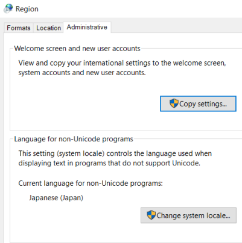

When generating for multiple languages it is important to check the workstation Settings.
The Windows workstation that will be in charge of the generation must be explicitly configured to support the set of languages needed. Local system and languages settings are used when generating the application, which means that a wrong configuration can result in wrong application generation.
Make sure to configure the correct "Language version of non-unicode programs" (Control panel → Regional and language options → Advanced).
This could be set as
or the configuration needed.
Do not mark the option
Beta: Use Unicode UTF-8 for worldwide language support

| Backlinks |
| RTL checklist |